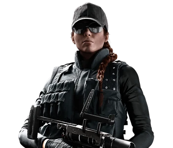

Eliza "Ash"
When I was little, my savta taught me that 'Silence was a women's
best garment'. But, I have to admit, I never really took her advice to heart
Gameplay Description
A Light Health Operator, Ash comes equipped with the M120 CREM. It can shoot up to two Breaching Rounds, which will burrow into a surface and detonate automatically.
1. Ash is equipped with a single-shot grenade launcher that can fire Breaching Rounds. When one Breaching Round is fired, Ash reloads the grenade launcher with her next Breaching Round.
Breaching Rounds are unaffected by gravity and do not drop off at any range, meaning they could travel forever.
Breaching Rounds have no projectile size; they can pass through openings that are as small as a bullet hole.
Breaching Rounds have a radius of 3 meters.
2. After striking a surface, the Breaching Round will stick to the surface and explode after 2 seconds
If there were heartbeats when affected by the EMP blast, the heartbeat icon will stay in place for the disabled duration.
Breaching Rounds are unaffected by Mute's Signal Disruptors and electricity from Bandit's Shock Wires or Kaid's Electroclaws.
3. Aside from Gadgets, the EMP also affects some defender weapon attachments caught in its radius:
Defender Electronic Sights (i.e. Red Dot Sight, Reflex Sight, Holographic Sight) caught within the EMP radius will be disabled for 15 seconds, during which their reticle will disappear.
Device Description
Uses a Breaching Hammer to breach through destructible surfaces.
While breaching hammers are nothing new to CTU or law enforcement operations, “The Caber” is unique due to its exceptional size and weight. Such dimensions would be impractical in the hands of most agents but Sledge’s exceptional physical prowess make it a formidable presence on the battlefield, allowing for quick and effective breaches.
Sledge’s breaching hammer was directly inspired by CTU battering rams. There are four kinds of breaching tools: mechanical, ballistic, explosive and thermal. Using sledgehammers or other blunt objects to breach is known as mechanical breaching, and often serves as a relatively quiet supplement compared to the other, more attention-grabbing methods. Mechanical breaching was used during the Iranian Embassy Siege to gain access to rooms and is still used in modern-day conflicts in tight urban zones where ballistic or explosive breaching methods carry more risk.